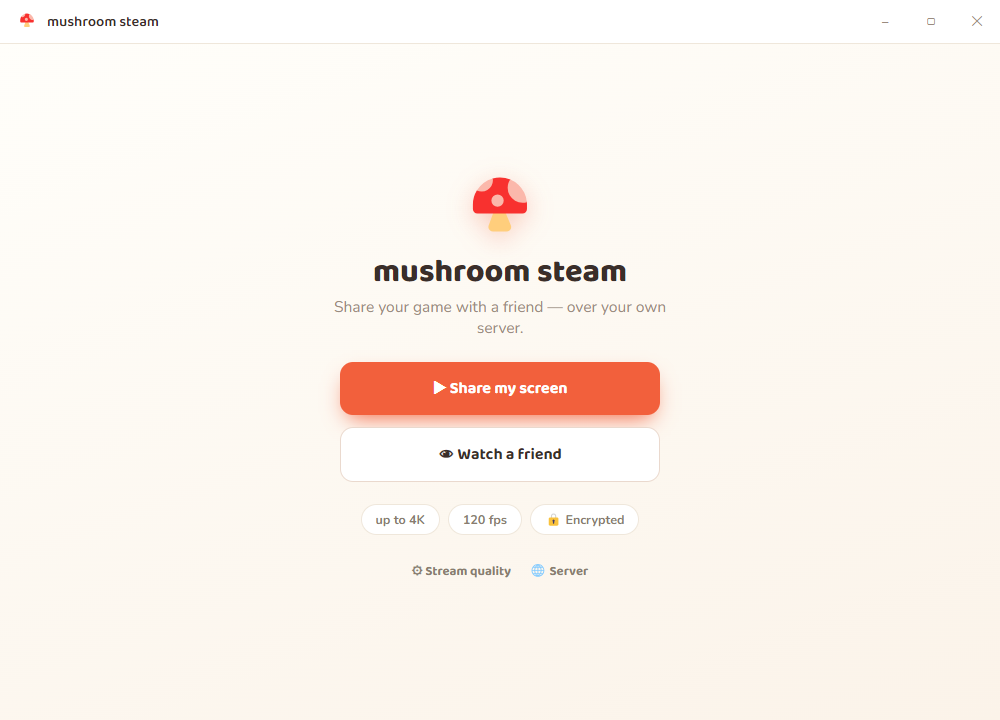

It's a peer-to-peer streaming app
Unlike Twitch or Discord, your gameplay video never travels through a company's servers. It goes straight from your PC to your friend's PC. The only thing in the middle is a tiny signaling server you host yourself — and it's just a matchmaker.
flowchart LR
subgraph SERVER["🖥️ Your server (a Raspberry Pi is plenty)"]
direction TB
SIG["Signaling (wss://)
introduces the two peers"]
TURN["coturn (TURN)
relay — fallback only"]
end
HOST["🎮 Host (app)"]
VIEW["👀 Viewer (app)"]
HOST -- "room code + SDP/ICE" --> SIG
VIEW -- "room code + SDP/ICE" --> SIG
HOST == "VIDEO — direct peer-to-peer" ==> VIEW
HOST -. "relay only if NAT blocks" .-> TURN
TURN -. relay .-> VIEW
Your server only pairs the peers. The video travels directly between the two PCs.
- ✅ Pairs people by a short room code like
MUSH-7Q2K4. - ✅ Relays the WebRTC handshake (a few small SDP/ICE messages) so the two PCs can find each other and connect directly.
- ✅ Signs short-lived TURN credentials for the fallback relay.
- ❌ Never sees your video. No media, no recording, no content logs pass through it.
What you get
True low latency
Real-time WebRTC, sub-second glass-to-glass — built for playing together, not watching on a delay.
Private & self-hosted
You run the only server involved, and it never touches the video. Nothing is uploaded to a third party.
Up to 4K · 120 fps
Pick 720p / 1080p / 1440p / 4K at 30 / 60 / 120 fps, with a 1–100 Mbps bitrate slider.
Hardware encoding
Turn on the GPU toggle to encode with H.264 on NVENC / QuickSync / AMD — smooth high-fps with almost no CPU cost.
Per-window audio
Share only the sound of the window you're streaming — not your whole desktop. (Windows.)
Live quality changes
Change resolution, framerate, bitrate or codec mid-stream — applied instantly, no reconnect.
Resilient
Adaptive bitrate, graceful degradation, and automatic ICE-restart recovery if the network blips.
Connection stats
A built-in overlay shows live codec, bitrate, resolution, fps, latency, packet loss and the limiting factor.
Get going in two parts
Just want to try it? You can run the signaling server on your LAN
over plain ws:// with no certificate, and connect two PCs on the same network in minutes.
See LAN-only quick test.